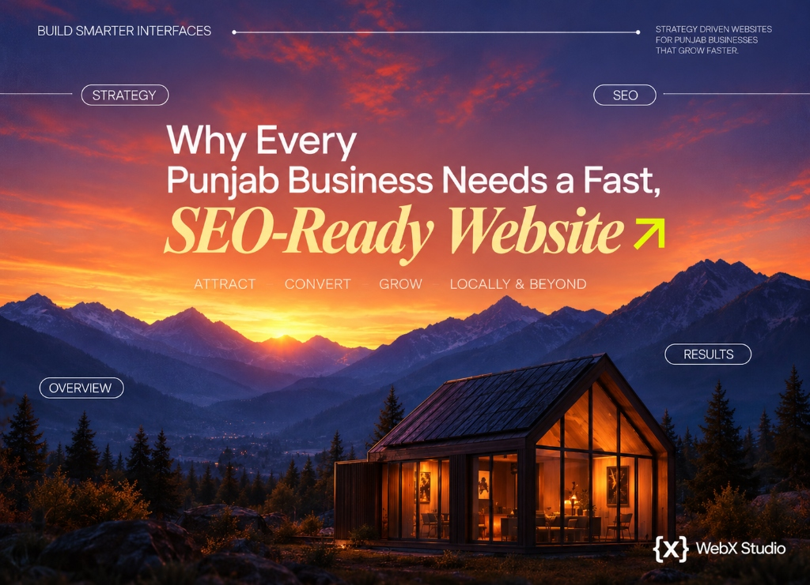

Why every Punjab business needs a fast, SEO-ready website
From Ludhiana’s factories to Amritsar’s hotels and Mohali’s startups, the businesses winning in 2026 have one thing in common: a website that’s fast, findable and built to convert. Here’s why it’s no longer optional - and what yours should do.

Punjab has never lacked ambition. Its manufacturers export worldwide, its farmers feed the country, its startups are drawing serious capital. What far too many of these businesses still lack is a website that matches their real quality. In 2026, that gap isn’t a small oversight - it’s a steady leak of customers to whoever shows up faster and looks more credible on Google.
We’re Web{X} Studio, a Ludhiana studio that builds for businesses across Punjab and abroad — see our web development agency in Ludhiana. Here’s the plain case for why a fast, SEO-ready website is now non-negotiable - whatever your city or industry.
Your customers already researched you online before they called. A slow or missing website doesn’t just fail to help - it actively sends buyers to competitors who invested in theirs.
1. Buyers decide online, before they ever contact you
Whether it’s a European importer sourcing hosiery from Ludhiana, a family choosing a hotel near the Golden Temple, or a founder comparing IT vendors in Mohali - the first “meeting” happens on your website, not in your office. If it loads slowly, looks dated or doesn’t answer their questions, they quietly move on. You never even know you lost them.
2. Exports are won on digital trust
Punjab’s exporters in Jalandhar, Ludhiana and beyond compete globally - and overseas buyers vet suppliers online before sending a single enquiry. A professional, English-clean website with real product catalogues, certifications and easy enquiry paths signals a serious, reliable partner. A weak site raises doubt exactly when you need confidence.
3. Google is where local demand now starts
“Best interior designer in Ludhiana,” “dental clinic near me,” “sports goods manufacturer Jalandhar” - these searches happen thousands of times a day across Punjab. Being found requires an SEO-ready website plus a complete Google Business Profile. Without them, you’re invisible at the exact moment someone’s ready to buy.
What “SEO-ready” actually means
An SEO-ready website isn’t about stuffing keywords. It’s built, from day one, to be found and to convert:
- Fast. Loads in under two seconds and passes Core Web Vitals - Google’s speed and stability signals.
- Mobile-first. Most Punjab traffic is on a phone; the mobile experience is the experience.
- Clean under the hood. Semantic markup, structured data and a sensible page structure Google can understand.
- Targeted. Pages built around the terms your customers actually search - locally and, if you export, globally.
- Conversion-focused. Clear calls to action, enquiry forms and WhatsApp paths that turn visitors into leads.
Turn your website into your best salesperson
Whatever your business does in Punjab, we’ll build a fast, SEO-ready website designed to bring in real enquiries - and send you a clear INR quote within two business days.
Start your projectThe cost of not having one
The businesses that skip a proper website rarely see the bill - because it arrives as absence: the enquiry that went to a competitor, the buyer who never trusted you enough to call, the local customer who found someone else on Google first. A serious website in Punjab costs ₹80,000-₹2,50,000 for most businesses (see our Punjab cost guide). Measured against a single lost export order or a month of missed local leads, it pays for itself quickly.
A website isn’t an expense your business has to justify - it’s the salesperson that works while you sleep.
Where to start
You don’t need to build everything at once. Start with a fast, credible core site and a complete Google Business Profile, then add ecommerce, portals or content as you grow. The important move is simply to stop leaking customers - and to make sure that when someone in Punjab or across the world searches for what you do, they find you looking every bit as good as you really are.
If you’re not sure what your business needs, start by choosing the right studio - the one whose work you’d be proud to put your name beside.